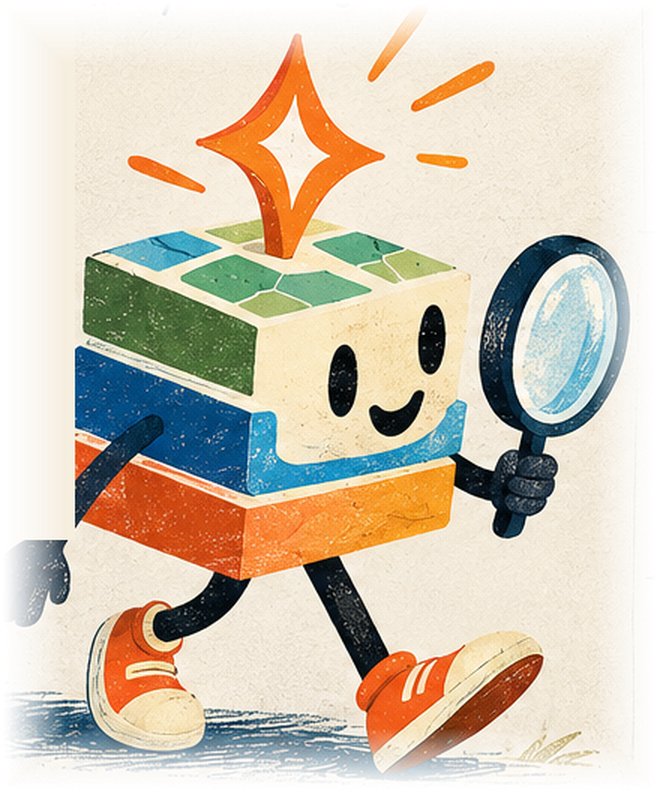

UX/UI system · v0.1 draft for approval
Foundations
Layercake teal leads the interface. Pip and the orange discovery spark add warmth at the moments where people search, find and get started. Client directories keep their own brand; Discover shows up only as a quiet layer.
Logo proposal
 scover
Primary stacked
scover
Horizontal, reversed
Built on Layercake Discover
App icon 64/32/16 · endorsement chip
scover
Primary stacked
scover
Horizontal, reversed
Built on Layercake Discover
App icon 64/32/16 · endorsement chip
The spark replaces the dot of the i: the product name carries Pip's symbol without needing Pip. Set in Bricolage Grotesque; outline and kern by hand before production. If an official Layercake mark exists, it replaces the word "layercake" and "discover" sits beneath it.
Colour tokens
Layercake chrome · leads
Surfaces and text
Pip accents · illustration and highlights
Type
Where Pip turns up: a volume dial

Full sceneLayercake Discover marketing and homepageSpark onlyAI features inside client-branded directoriesThe more a page belongs to someone else's brand, the less of Pip it shows. On a client directory such as uk-associations.com, only the spark appears, and only beside AI features.